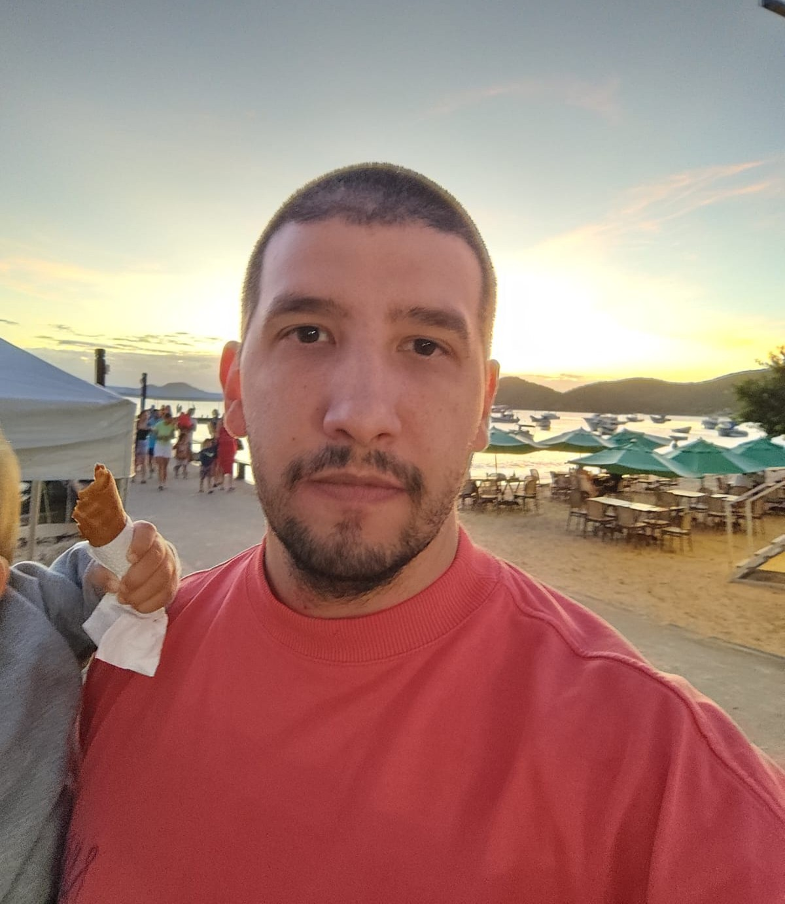

Análise e Desenvolvimento de Sistemas
Descomplica Faculdade Digital · Tecnólogo
Disponível para oportunidades
Desenvolvedor Front-End com quase 4 anos de experiência criando produtos SaaS eficientes, escaláveis e centrados em pessoas.

NOVA FRIBURGO
RJ, BRASIL
01 — SOBRE MIM
Sou Desenvolvedor Full Stack com forte atuação em Front-End e experiência na construção de produtos SaaS na Doctoralia e na Feegow. Desenvolvo soluções com React.js, TypeScript, JavaScript, Node.js, NestJS, PHP, MySQL e APIs REST.
Meu background em Administração soma visão de negócio, liderança, organização e foco em resultados à prática técnica. Em equipes ágeis, contribuo do planejamento à evolução contínua do produto, com componentização, refatoração, code reviews e atenção à experiência do usuário.
02 — FERRAMENTAS
METODOLOGIAS
03 — FORMAÇÃO
Descomplica Faculdade Digital · Tecnólogo
Labenu · Programação Web
Estácio · Administração de Empresas
03 — EXPERIÊNCIA
Doctoralia Brasil
Atuação na evolução de produtos SaaS para o setor de saúde, desenvolvendo novas funcionalidades em React.js e TypeScript. Criação de componentes reutilizáveis, integração com APIs REST, correção de bugs e melhorias contínuas de performance e experiência do usuário, em colaboração com Design, QA e Backend.
Feegow
Criação de interfaces responsivas, implementação de funcionalidades, integração com APIs e refatoração de código em ambiente ágil.